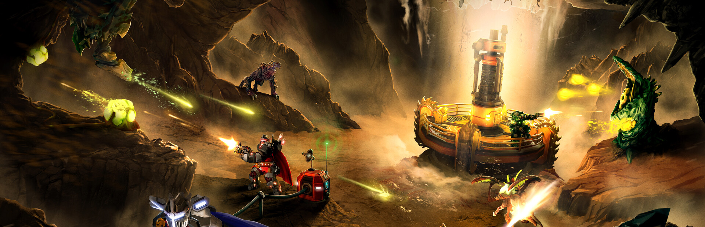

INTERACTIVE PRODUCT PREVIEW
What could your light bar tell you?
Try SignalBar's Artwork, Performance, Playtime, Steam moments, controller battery and Weather signals before installing anything. Change the numbers. Trigger an event. Watch the same 17 LEDs respond.
Visual simulation only. It does not connect to your Steam account or control hardware.
THE SIMULATOR
Make it yours. See it live.
Every control is a sample input. Nothing is sent anywhere; Reset restores the starting values.
START HERE
A signal for every moment.
Pick a scenario, then open its controls to experiment.
These are illustrative readings and sample artwork, not live Steam data. The event sequences are sampled from SignalBar's actual renderers; the physical glow is a browser approximation.
EVERYDAY DISPLAY / 01
A game's colours, on the machine.
Choose a game or use your own image. Move the red line to pick the row sampled into 17 colours.

Your image stays on this device. Nothing is uploaded. The real plugin uses locally installed Steam artwork, including SteamGridDB replacements.
EVERYDAY DISPLAY / 02
Make load visible.
Length is CPU/GPU usage. Colour follows temperature. Try changing either value and watch the bar react.
TIME SIGNAL
Watch time run out.
A Steam Families limit takes priority when a game runs. Or start a personal countdown without parental controls.
The highlight keeps travelling right to left. In the last eight seconds, three quick white flashes repeat until zero. No breathing effect.
SHORT LIGHT EVENTS
Small moments, a little magic.
Each event temporarily takes the bar, then gives it back to the current display. Pick any available sequence and play it.
NOTIFICATION
Return beacon
The edges answer a centre beacon and return to it.
Recording's centre marker stays on over Artwork or Performance. It does not cover a countdown or another event.
CONTROLLER BATTERY
Two players. One glance.
Use sample charge levels to see a single gauge, two mirrored gauges, charging, connection and low-battery alerts.
Preview plays manually in either context. Automatic alert placement follows your Home/in-game choice. Real battery data depends on what Steam reports for each controller. Dedicated controller mockup ↗
LOCAL WEATHER
A window into the sky.
Try the sixteen LED loops for eight conditions. This sample is offline: the plugin asks you to choose a city before it requests live weather.
Top-bar example: ☀ 18°C · shown next to the clock. The real plugin needs a chosen city; this demo uses sample data only.
Weather and the permanent controller gauge are alternatives. Countdowns and brief alerts still take priority. Snow takes hold is the shipped snow default. The plugin refreshes live conditions about every fifteen minutes using Open-Meteo; this page makes no weather request.
HOW IT COEXISTS
One bar, clear priorities.
Signals do not all play at once. The most important active message takes the bar, then the underlying display comes back.
- DisabledSignalBar stops and returns control to Steam.
- Steam takes controlSignalBar yields to a new native LED write.
- Critical countdownThe final five minutes protect the timer from light events.
- Short alertsNotifications, achievements, captures and controller warnings appear briefly.
- Active countdownSteam Families or your personal timer replaces the base display.
- Controller gauge or WeatherChoose one permanent signal for Home, in game or everywhere.
- Artwork or PerformanceYour everyday display, when nothing higher is active.
Set the timer to four minutes, then send a notification to see the priority rule.
Extra dark LEDs affect Countdown and Performance hardware output only, not the logical preview. In the real plugin, Advanced / debug also offers confirmed JSON import and Reset to defaults. No hardware access occurs on this site.